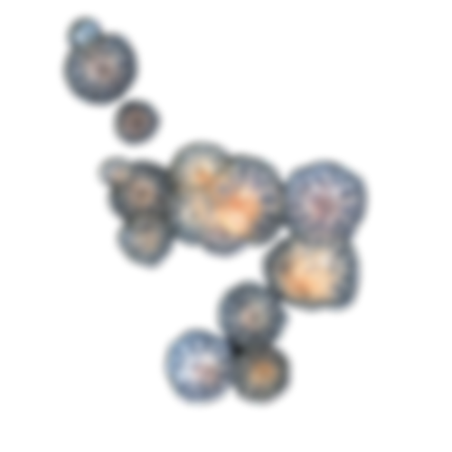
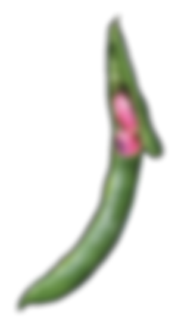
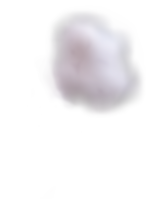
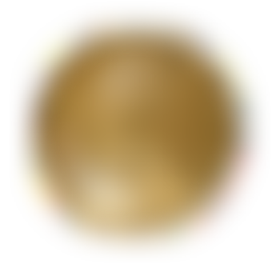
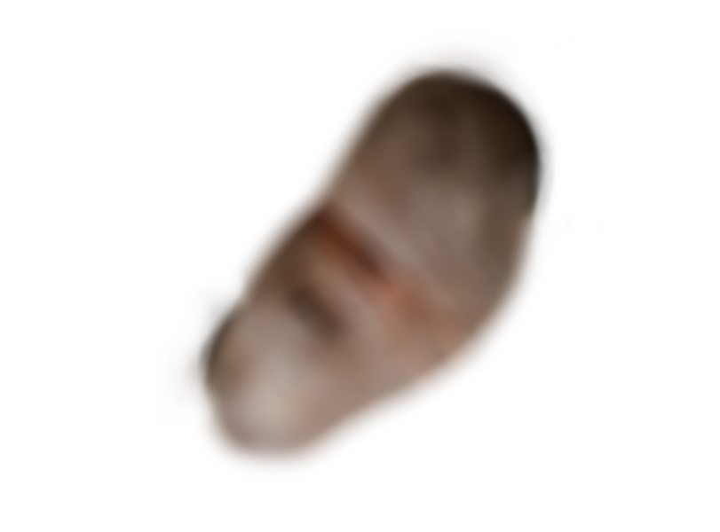
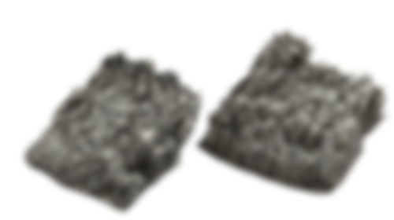

A free-swimming marine coelenterate
with a gelatinous bell or saucer-shaped
body that is typically transparent and
has stinging tentacles around the edge.
with a gelatinous bell or saucer-shaped
body that is typically transparent and
has stinging tentacles around the edge.

A celestial body distinguished from
the fixed stars by having an apparent
motion of its own,especially with reference
to its supposed influence on people and events.
the fixed stars by having an apparent
motion of its own,especially with reference
to its supposed influence on people and events.

A bone framework enclosing the brain of a vertebrate;
the skeleton of a person's or animal's head.
the skeleton of a person's or animal's head.

The immature pod of any of various
bean plants, eaten as a vegetable.
bean plants, eaten as a vegetable.

A machine readable code consisting
of an array of black and white squares,
typically used for storing URLs or other
information for reading by the camera on a smartphone.
of an array of black and white squares,
typically used for storing URLs or other
information for reading by the camera on a smartphone.

A thick cloud of tiny water droplets
suspended in the atmosphere at or near
the earth's surface which obscures
or restricts visibility.
suspended in the atmosphere at or near
the earth's surface which obscures
or restricts visibility.

A spherical representation of
the earth or of the constellations
with a map on the surface.
the earth or of the constellations
with a map on the surface.

A bone framework enclosing the brain of a vertebrate;
the skeleton of a person's or animal's head.
the skeleton of a person's or animal's head.

Hard solid non-metallic mineral
matter of which rock is made,
especially as a building material.
matter of which rock is made,
especially as a building material.